Installation
Installation
NOTE:
- Use only Super High Temp Urea Grease (P/N 08798-9002).
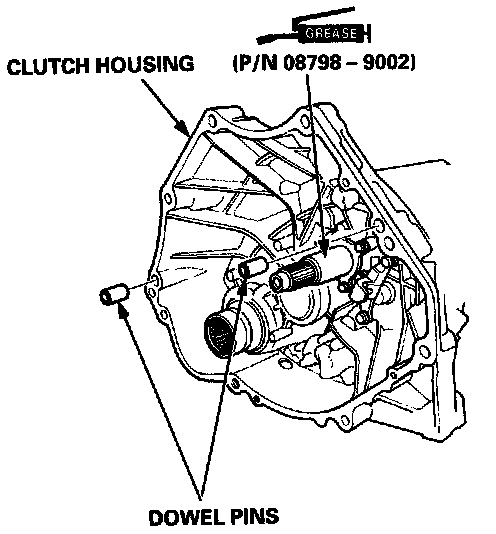
- Check that the two dowel pins are installed in the clutch housing.
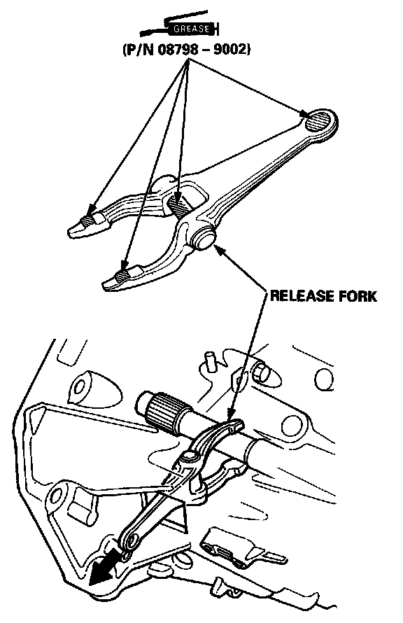
1. Set the release fork in the clutch housing.
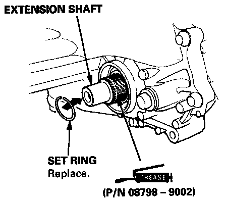
2. Set the extension shaft to the transmission, then install the set ring.
3. Place the transmission on the transmission jack, and raise it to the engine level.
4. Install the transmission mounting bolt and 26 mm shim.
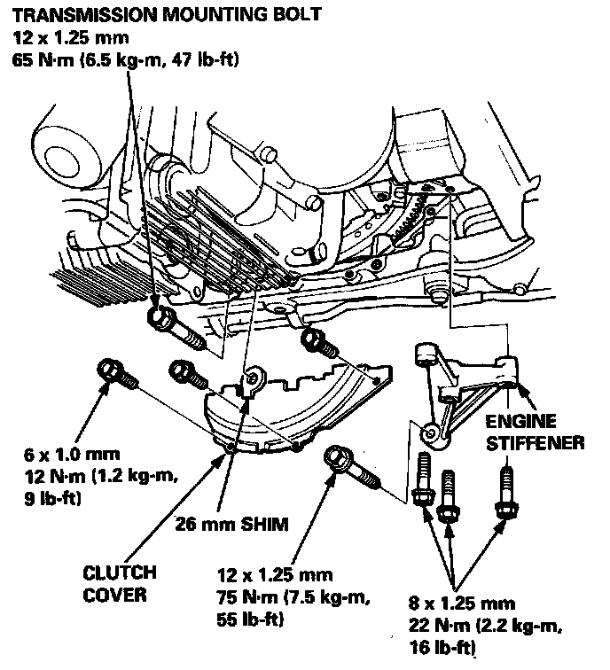
5. Install the clutch cover.
6. Install the engine stiffener.
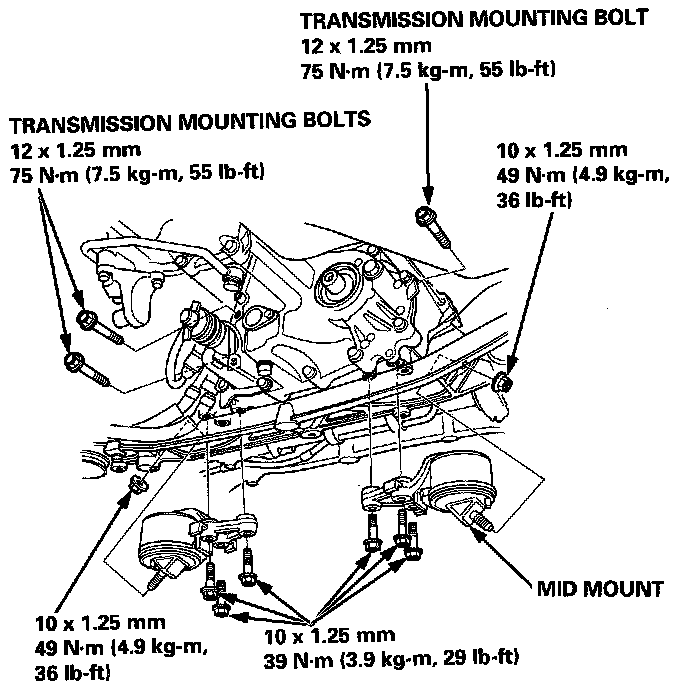
7. Install the transmission mounting bolts.
8. Install the mid mounts.
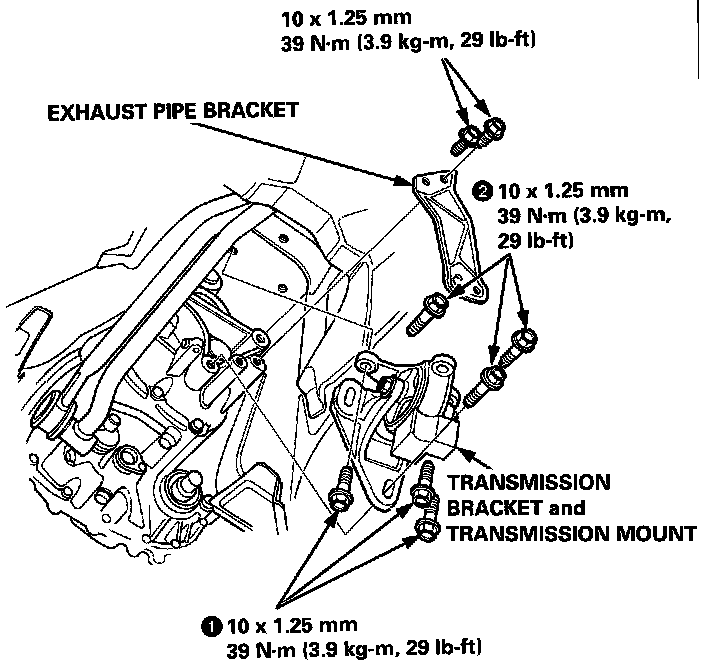
9. Install the transmission bracket and transmission mount.5
NOTE: Tighten the bolts in the sequence shown.
1O. Install the exhaust pipe bracket.
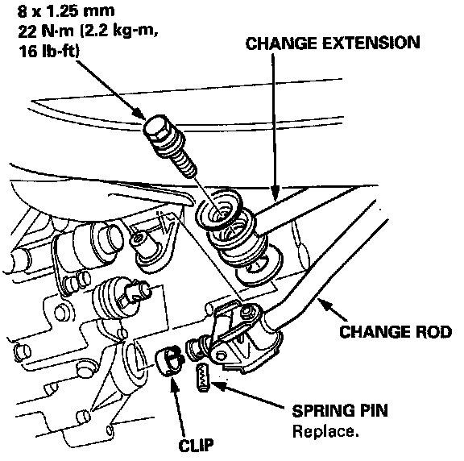
11. Install the change rod and change extension.
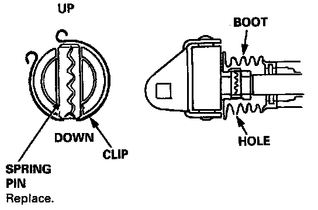
NOTE:
- Turn the boot so the hole is facing down as shown.
- Make sure the boot is installed on the change rod.
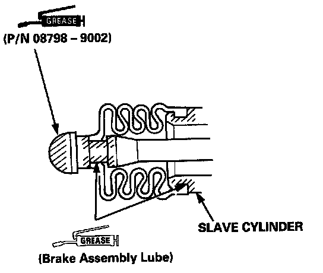
12. Install the release fork on the release bearing and pivot.
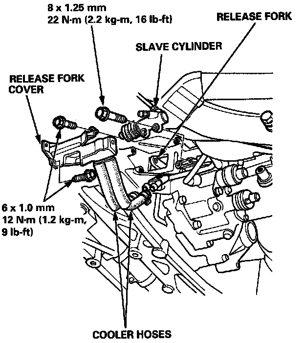
13. Install the slave cylinder and release fork cover.
14. Connect the cooler hoses.
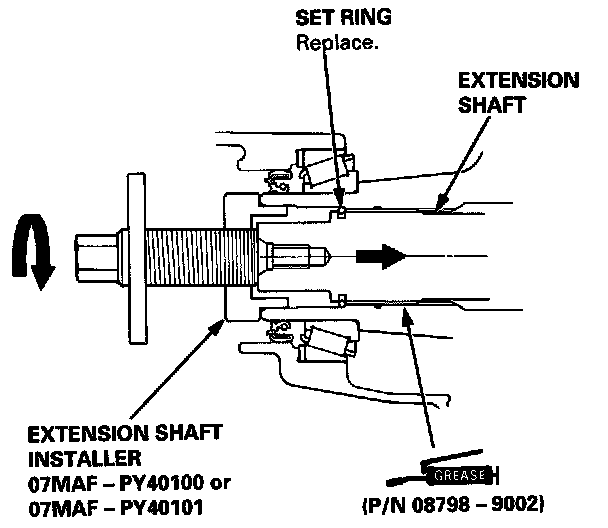
15. Apply grease on the splines of the extension shaft, and install the extension shaft using the special tool as shown.
NOTE:
- Make sure the extension shaft locks in the secondary gear groove.
- Apply Super High Temp Urea Grease (P/N 08798 - 9002) to the extension shaft splines.
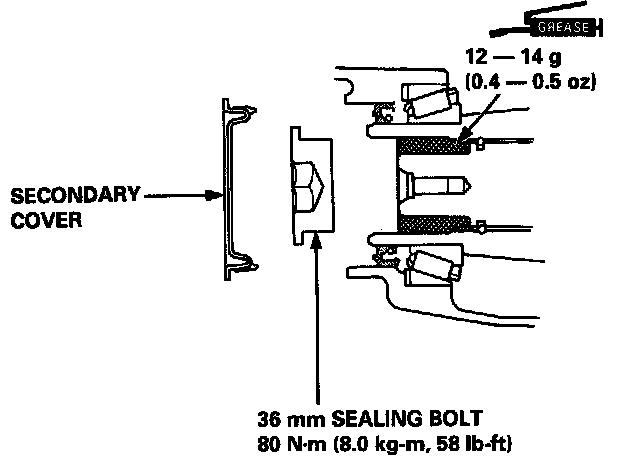
16. Install the 36 mm sealing bolt and secondary cover.
NOTE:
- Shift the transmission to low gear to lock the secondary gear.
- Apply liquid gasket (P/N 08718 - 0001) to the threads.
- Fill the secondary gear with Super High Temp Urea Grease (P/N 08798 - 9002)
.
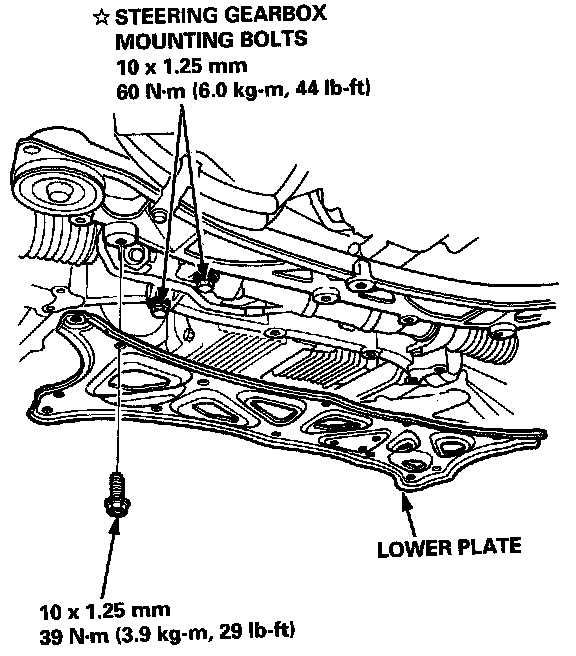
17.Remove the steering gearbox mounting bolts, then install the lower plate.
:Corrosion resistant bolt.
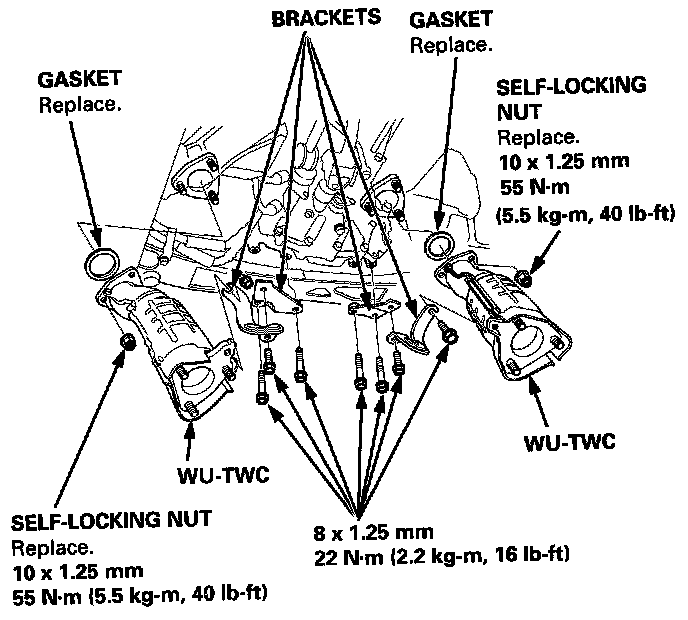
18. Install the warm up three way catalytic converters (WU-TWC) and brackets.
19. Install the heat shield and bracket.
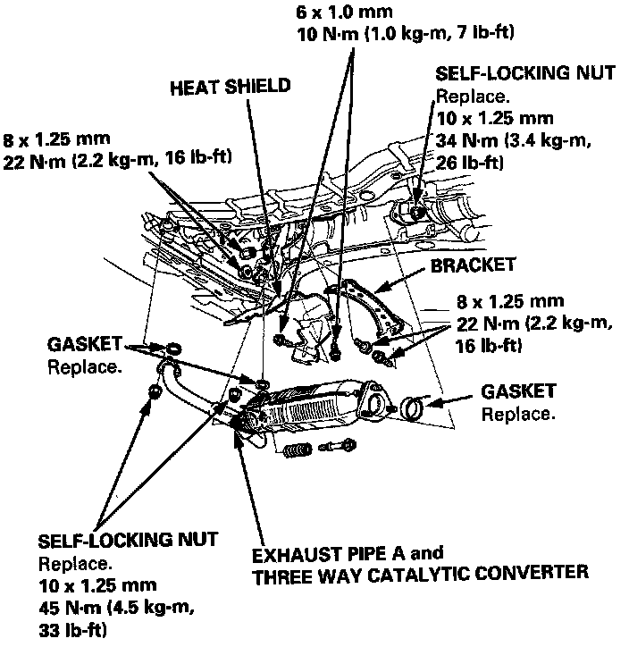
20. Install the exhaust pipe A and the three way catalytic converter.
21. Install the clutch hose bracket.
22. Install the transmission mounting bolts.
23. Connect the connectors.
24. Install the control box.
25. Install the strut bar.
26. Refill the transmission with oil.
27. connect the battery positive and negative cables to the battery.
28. Check the clutch.
29. Shift the transmission and check for smooth operation.